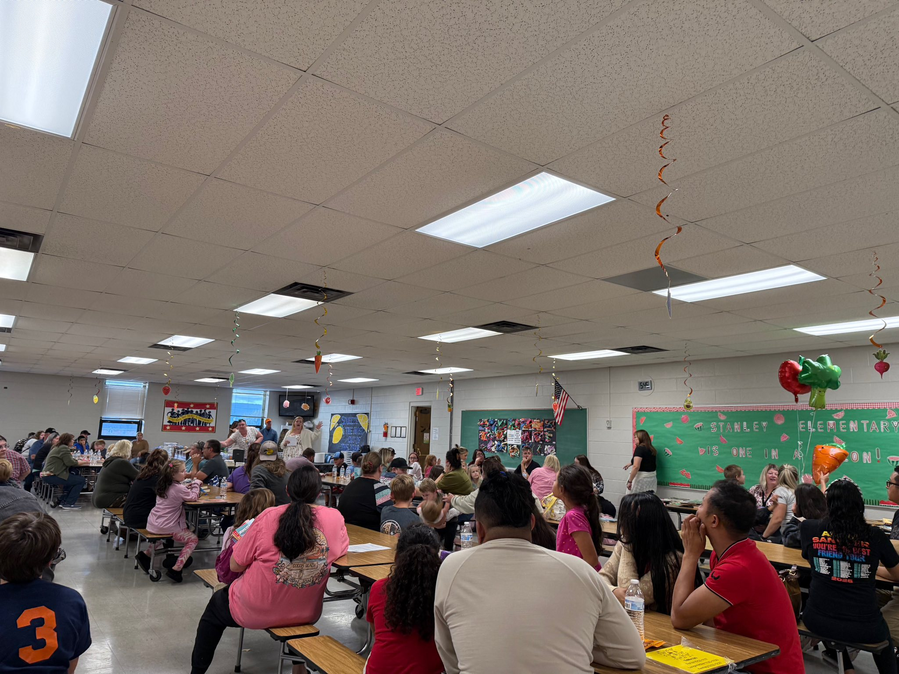

Cohort 1 📍 Region 4
Page County's chronic absenteeism rates told a consistent story across the division's eight schools. One in five students were chronically absent, and the division recognized the need for a coordinated approach. All eight schools share one framework, one community partner, and one goal. Rather than hiring new staff, the division pays stipends to existing teachers to serve as coordinators at each building, putting the work in the hands of people who already know the students and families.
Seven of the eight schools operate clothing closets, food pantries, laundry rooms, and school supply programs to make sure students arrive not just present, but ready to learn. Through a series of events, the division engaged thousands of attendees, from community read-alouds at the elementary level to a college campus visit for middle schoolers. The programming spans the full K–12 range, demonstrating how a single goal can drive division-wide commitment.

At Shenandoah Elementary, a community read-aloud on the front porch captures what family engagement looks like when it's unhurried — children gathered on a porch swing, listening intently while an adult reads aloud under string lights. Stanley Elementary filled every seat in the cafeteria for Title I family engagement night. At Springfield, students performed to a full auditorium. Luray Elementary's Trunk-or-Treat drew a long line of families at dusk against the Shenandoah mountain backdrop — in a rural community where students can't always go door to door, the school parking lot becomes the neighborhood.


Page County's middle schoolers visited James Madison University for a campus tour — early college exposure that builds aspiration and gives students a reason to stay engaged now. At Luray Middle, staff led the way during the annual Trunk-or-Treat, showing up in coordinated costumes to model the participation they ask of families.
Page County exemplifies VCSI Stage 2.2: Develop and Action Plan. The division is focused on measurable goals that support the shared vision.
302 attended community engagement events this fall across both Luray and Page County High this year.